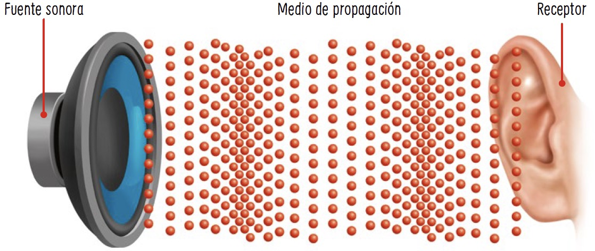

Entrada Blog
¿Qués es una vibración?
Es la variación de un sistema en relación al tiempo, en torno a una posición de equilibrio estable, su característica fundamental
Sistemas vibratorios
Un sistema vibratorio es un conjunto físico que exhibe movimiento oscilatorio alrededor de una posición de equilibrio. Por ejemplo, un péndulo simple, como un columpio, es un sistema vibratorio donde una masa está suspendida de un punto fijo y oscila bajo la influencia de la gravedad.
Tipos de sistemas vibrantes
- Mecánicos: Pueden ser como masa-resorte-amortiguador, vibraciones de estructuras y de máquinas
- Eléctricos: Como circuitos resonantes y vibraciones electromagnéticas
- Acústicos: Por ejemplo instrumentos musicales, cuerdas vocales y tubos de resonancia
Fuentes sonoras
Una fuente sonora es un objeto o cuerpo que produce ondas sonoras al vibrar. Por ejemplo, una guitarra al ser tocada genera sonido debido a las vibraciones de las cuerdas.
Fuentes de sonido
Naturales: Como vibraciones de cuerpos sólidos y fluidos
Artificiales: Como altavoces, instrumentos musicales y maquinaria
